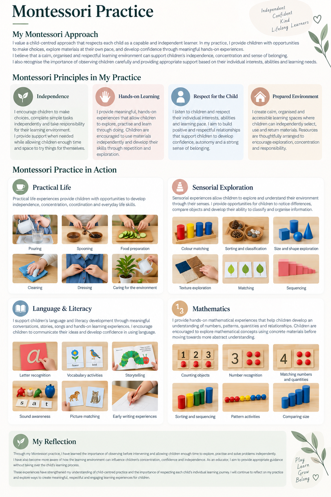

Independence
I encourage children to make choices, complete simple tasks independently and take responsibility for their learning environment.
I provide support when needed while allowing children enough time and space to try things for themselves.
Independent · Confident · Kind
Lifelong Learners
I value a child-centred approach that respects each child as a capable and independent learner. In my practice, I provide children with opportunities to make choices, explore materials at their own pace, and develop confidence through meaningful hands-on experiences.
I believe that a calm, organised and respectful learning environment can support children’s independence, concentration and sense of belonging.
I also recognise the importance of observing children carefully and providing appropriate support based on their individual interests, abilities and learning needs.
I encourage children to make choices, complete simple tasks independently and take responsibility for their learning environment.
I provide support when needed while allowing children enough time and space to try things for themselves.
I provide meaningful, hands-on experiences that allow children to explore, practise and learn through doing. Children are encouraged to use materials independently and develop their skills through repetition and exploration.
I listen to children and respect their individual interests, abilities and learning pace. I aim to build positive and respectful relationships that support children to develop confidence, autonomy and a strong sense of belonging.
I create calm, organised and accessible learning spaces where children can independently select, use and return materials. Resources are thoughtfully arranged to encourage exploration, concentration and responsibility.
Practical life experiences provide children with opportunities to develop independence, concentration, coordination and everyday life skills.

Sensorial experiences allow children to explore and understand their environment through their senses. I provide opportunities for children to notice differences, compare objects and develop their ability to classify and organise information.
I support children’s language and literacy development through meaningful conversations, stories, songs and hands-on learning experiences. I encourage children to communicate their ideas and develop confidence in using language.
I provide hands-on mathematical experiences that help children develop an understanding of numbers, patterns, quantities and relationships. Children are encouraged to explore mathematical concepts using concrete materials before moving towards more abstract understanding.
Through my Montessori practice, I have learned the importance of observing before intervening and allowing children enough time to explore, practise and solve problems independently.
I have also become more aware of how the learning environment can influence children’s concentration, confidence and independence. As an educator, I aim to provide appropriate guidance without taking over the child’s learning process.
These experiences have strengthened my understanding of child-centred practice and the importance of respecting each child’s individual learning journey. I will continue to reflect on my practice and explore ways to create meaningful, respectful and engaging learning experiences.
Play · Learn · Grow · Belong